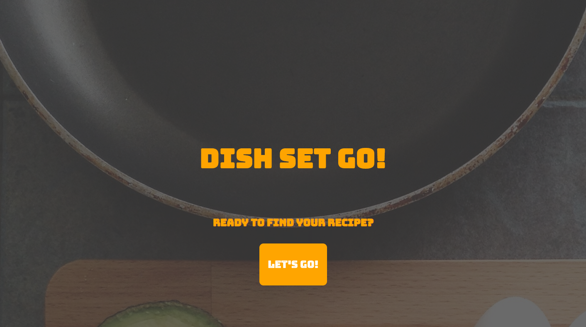
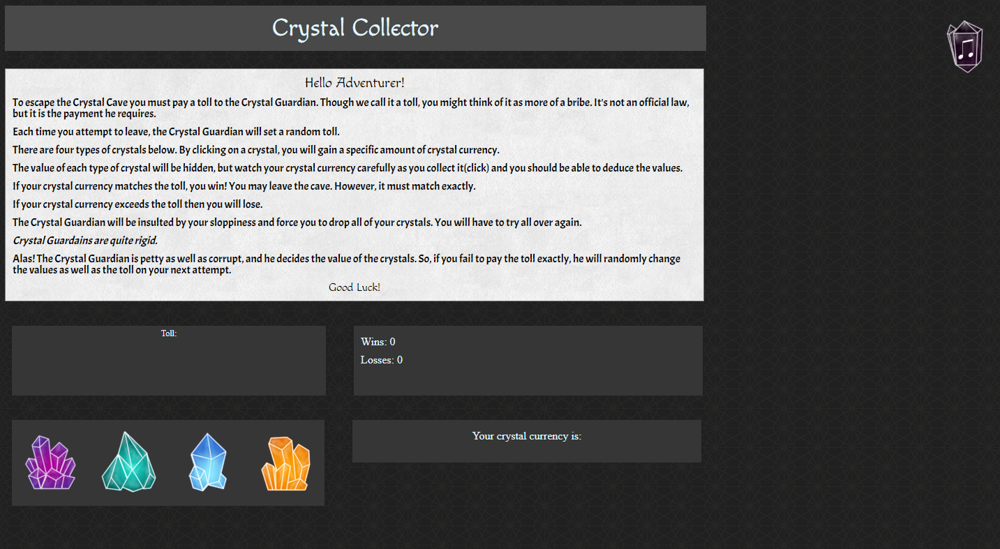

Barbara Hernandez
Who am I?
I'm a full stack developer, but at my core I am a problem solver.
Once I see a problem, I need to see the solution, whether that means assisting others or doing it myself.
Developers, myself included, must be solution oriented.
Our software is not the end goal. The solution it provides is. In this pursuit, there is no room for ego.
I am passionate about the growth of my team and my projects.
My teammates describe me as dedicated, strategic, and a natural leader and mentor.
"How can I be of service?" is my guiding principle.
Projects
ProGro
Designed to encourage employee engagement, this lets users suggest, vote for, and join projects. Manager oversight built in.
Dish Set Go
A web application designed for users to quickly search for recipes and send a list of ingredients to themselves via text.
Crystal Collector
A simple game where users must accrue points to exactly hit a target number. All of the artwork is custom made for this project.
Train Tracks
A web application which stores train schedules in firebase, allowing users to view information across devices.